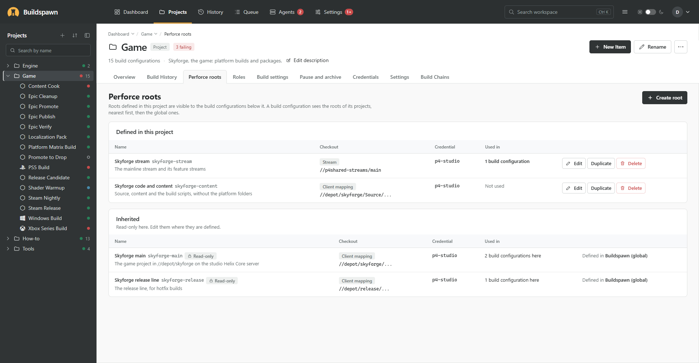
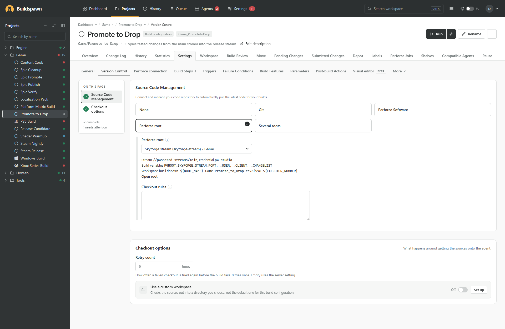

Perforce roots
A Perforce root is a Perforce connection plus a workspace definition, set up once and shared by many build configurations.
When to use it
Use a Perforce root when several build configurations sync the same depot or stream. You define the server, user, stream or view and sync options in one place. A change to the root reaches every build configuration that uses it. For a build configuration that needs its own workspace settings, use Perforce Software instead.
Roots live on the global list or on a project. A root on a project is seen by the build configurations in that project and the projects below it. A build configuration sees the roots of its projects, nearest first, then the global ones. If two roots have the same ID, the nearer one wins.
How to set it up
Create a root
- Open the project, then click Perforce roots. For a root every build configuration may use, open Manage Buildspawn › Perforce roots.
- Click Create root.
- Fill in the form (every field is listed below).
- Click Test connection to check that Buildspawn can sign in and see the stream or client.
- Click Create root.

Use a root in a build configuration
- Open the build configuration and go to Settings › Version Control.
- Choose Perforce root.
- Pick the root in Perforce root. The line under the picker shows what the root checks out and the workspace name for this build configuration.
- Optionally fill in Checkout rules.
- Click Save.

| Field | What it does |
|---|---|
| Perforce root | Roots of this build configuration's projects, nearest first, then the global ones. |
| Polling | Shown when polling was skipped because a Perforce trigger is active on the root (see Polling and triggers). |
| Checkout rules | One rule per line: +:path includes, -:path excludes, path=>dir and .=>dir put files into a folder. Paths are relative to the workspace side of the root's mapping and name directories. The most specific rule wins. Without a +: rule everything else is included. On a stream only +:. and +:.=>dir work, unless the root has Create non-stream workspace. Excluded paths are not synced, do not start polling and do not show in changes. |
Every field of a root
Name and scope
| Field | What it does | Example |
|---|---|---|
| Root name | Unique in this scope. Shown in the picker. | Skyforge Main |
| Root ID | Build configurations refer to the root by this ID. Letters, digits, _, . and -, starting with a letter or digit. It is offered from the name. After the root is made, Change ID renames it and updates the build configurations that use it. Their next build starts from an empty workspace once. | skyforge-main |
| Description | Optional text. | Main line of the game |
| Belongs to | Shows where the root is defined and who sees it. |
Connection
| Field | What it does |
|---|---|
| Credential | A Perforce password or ticket credential. The port and user come from it. The password never leaves it. See Perforce connections. |
| Test connection | Checks the credential, mode, stream and client you typed. |
What to check out
Choose one of three cards.
| Card | Field | What it does |
|---|---|---|
| Stream: work on a stream; the mapping comes from the stream | Stream | An existing stream, such as //skyforge/main. It may use parameters: //skyforge/${BRANCH}. |
| Enable feature branches and Branch streams | One stream per line. * is a wildcard, -: leaves a stream out, and the last matching line decides. Each stream gets its own builds and workspace. See Streams. | |
| Create non-stream workspace | Allows every checkout rule, but the build cannot submit to the stream. | |
| Client: use an existing client as it is | Client name | An existing client. Only its mapping is used. Builds run in the build configuration's own client, so the client's name is ignored. Example: build-${NODE_NAME}. |
| Client mapping: write the depot to workspace lines here | Client mapping | Depot to workspace lines in the View Mappings editor. Use //${P4_CLIENT}/ in place of a client name. |
| ChangeView | Limits paths to a revision or label, such as //depot/lib/...@1234. Other revisions of those paths are not watched. |
| Field | What it does |
|---|---|
| Label or changelist to sync | Checks out this label or change. Empty means the latest change. Builds record what they synced in P4ROOT_<ID>_CHANGELIST. |
Sync and cleanup
| Field | What it does | Default |
|---|---|---|
| How to sync | Incremental p4 sync transfers only what changed and leaves stray files. Auto Clean: reconcile, remove stray files, then p4 sync and Run p4 clean before p4 sync do the same reconcile first, which restores changed files and removes stray ones. Force: empty the workspace, then p4 sync -f starts clean every time. Skip the have list update (p4 sync -p) transfers all files and the server keeps no have list. | Incremental |
| Workspace options (switches) | Make all files writable (allwrite), Overwrite writable files (clobber), Compress data on transfer, Lock the workspace to its owner, Keep file times from the depot (modtime), Remove empty folders on sync (rmdir). Show as p4 text shows the options line. | New roots: clobber, rmdir on; the rest off |
| When submitting | What to do with files that are open but unchanged: Submit all, Revert unchanged, Leave unchanged open. | Revert unchanged |
| Line endings | Local (the agent's own), Unix, Windows, Mac, Shared. | Local |
| Remove the workspace after each build | Deletes the Perforce client and the workspace folder when the build ends, so the next build checks out clean. Only clients Buildspawn made. A client with shelved files stays. | Off |
| Remove inactive workspaces | Removes workspaces Buildspawn made for this root after they were inactive for the days below, checked every 6 hours. Other clients are never touched. | Off |
| Inactive for | The number of days. Empty means 7. | 7 |
Advanced settings
| Field | What it does | Example |
|---|---|---|
| Charset | Use none unless the server is in Unicode mode. Type to search. | none |
| P4Host | Pins the client to this host name. Builds connect as that host. | |
| Extra sync options | Added to p4 sync: -q -f -p -k -n --parallel=threads=N. Others are refused. | -q --parallel=threads=4 |
| Minimum polling interval | At least this many seconds between two polls of a build configuration on this root, kept across restarts. Empty means no limit. | 60 |
| Workspace name | Shown for information. Each build configuration gets its own client named buildspawn-${NODE_NAME}-${JOB_NAME}-${EXECUTOR_NUMBER}, so two build configurations on a root never share one. In a project the name also holds a hash of the full name. |
The summary beside the form shows the connection, workspace name, where the root is visible and which build configurations use it.
Other actions on a root
| Button | What it does |
|---|---|
| Duplicate | Makes a copy to change. |
| Delete Perforce workspaces... | Lists the workspaces Buildspawn recorded for the root and removes the ones you choose. Removing one reverts its opened files and deletes its pending changelists, which needs an Administrator Access connection. Shelved work is never deleted. |
| Administrator Access | Opens the connections page where administrator connections are defined. |
| Delete root | Refused while a build configuration uses the root. The message lists them. Move them to another root first. |
The Used in list of the root shows which build configurations use it. Saving a root changes all of them, starting with their next build.
A worked example
The Skyforge studio has one Unreal Engine game on stream //skyforge/main. On the Game project, create a root:
| Root name | Skyforge Main |
| Credential | Studio Helix Core (buildbot) |
| What to check out | Stream: //skyforge/main |
| How to sync | Auto Clean |
| Extra sync options | -q --parallel=threads=8 |
Then Windows Build, Linux Server Build and Unit Tests each choose Perforce root › Skyforge Main. Each builds in its own workspace.
What you see when it runs
The build log starts with the sync into the build configuration's workspace. The build page shows the changelist. The build configuration gets the Perforce tabs described on the Perforce page.
Problems and fixes
| You see | What to do |
|---|---|
| The root was not saved with a list of problems | Read each line. A stream that does not exist and a bad credential are the common ones. |
| Not deleted. It is used in ... | Move those build configurations to another root first. |
| After renaming the ID, a Pipeline still fails | Buildspawn rewrites a Pipeline's script. A script that builds the ID at run time cannot be found. Change it by hand. |
| The credential is not usable | The credential must be visible where the root is defined: on the same project or above it. |